El problema a tratar en el presente Trabajo Fin de Máster se basa en la detección de un ataque a un servidor DNS a partir de un set de datos obtenido mediante protocolo IPFX (IP Flow Information Export). Para ello, en primer lugar se lleva a cabo una exploración y transformación de los datos. Más tarde, una vez detectado el ataque, se aplican 2 modelos para corroborar dicho ataque. El primero de ellos es un modelo Kmeans y el segundo, un modelo ARIMA.
Como consecuencia de este ataque se consigue la caída del servidor y, por tanto, la denegación del servicio, es decir, estamos hablando de un ataque de naturaleza DoS (Denial of Service). El tráfico usado para la obtención de dicho set de datos ha sido obtenido por la empresa GLEAM AI a través de una red propia con dispositivos reales para simular tanto el tráfico como el ataque. La red fue diseñada tal como se muestra en la figura siguiente.
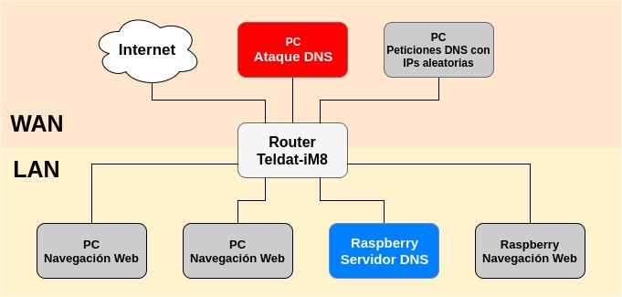
El set de datos obtenido, en json, consta de más de 1.700.000 flows, sumando un total de 2.1GB de datos. De las 46 variables del dataset solo se usaron 14 variables para este estudio. Las variables son:
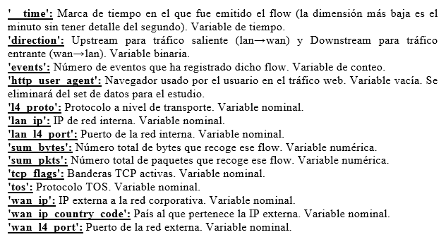
Como lo que se quiere averiguar es el momento del ataque DDoS y estos se caracterizan por producir flows de peticiones masivos (1), desde distintas localizaciones (2), dirigido al puerto 53 (DNS) (3), habrá que hacer especial hincapié sobre estas variables.
Se llevan a cabo representaciones gráficas de todas las variables del set de datos para ver por qué valores, y en qué frecuencia, están compuestas.
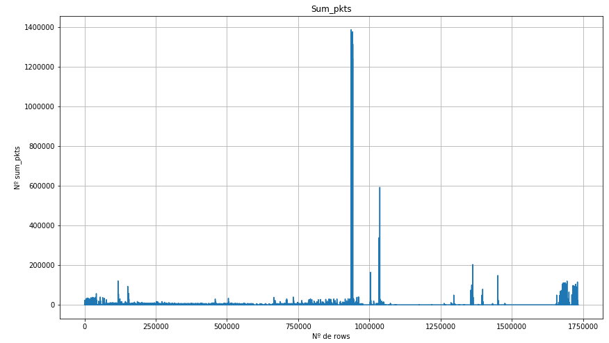
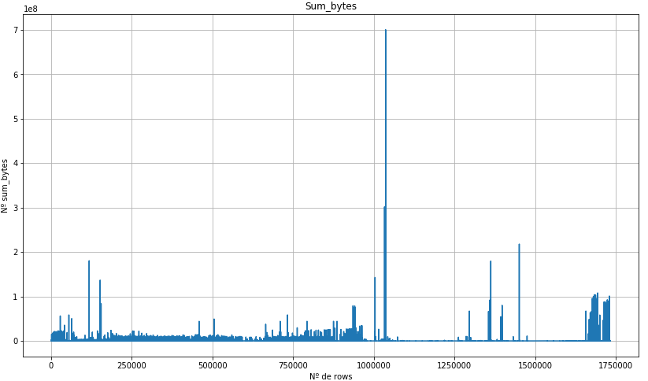
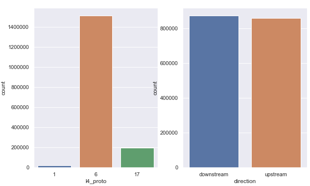
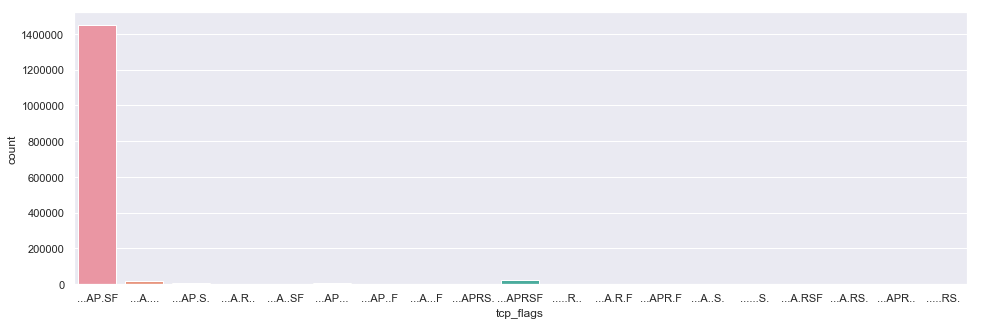
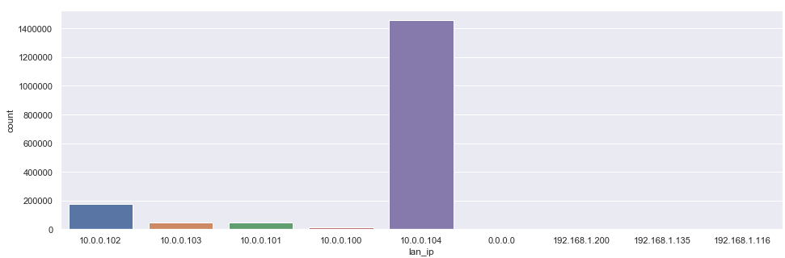
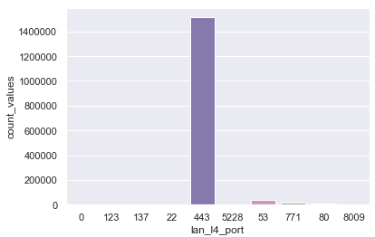
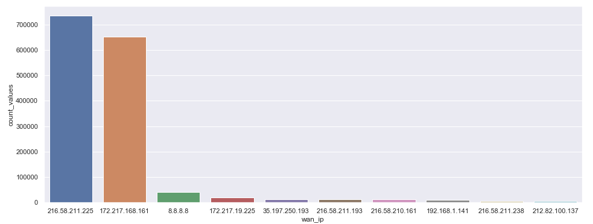
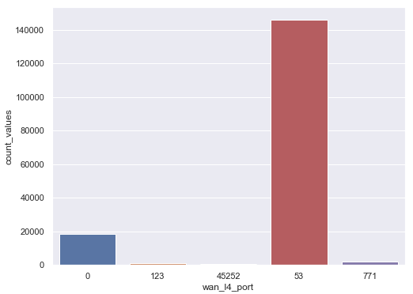
Tras visualizar la mayoría de las variables se ve que la gran mayoría de los flows son de tipo UDP. En el caso de la variable direction tenemos que hay casi tantas subidas como bajadas de información. En la variable lan_l4_port se ve que el segundo puerto local que más aparece es el 53, correspondiente al servidor DNS. El primero es el 443, correspondiente al https. Por último, en la variable wan_l4_port de nuevo vemos uno de los datos más relevantes tras explorar todas las variables, y es que el puerto que más aparece en todo el set de datos es el 53, lo que indica que probablemente dentro de esta ventana de tiempo, cuando fueron recopilados lo datos, hubo un ataque al servidor DNS. Ya que este dato indica que hubo peticiones masivas a dicho servidor. Lo que hay que definir es cuándo fue.
Se ha realizado una exploración de los datos, viendo los distintos valores que toman y en qué frecuencia, cada variable. A partir de ahora se trabajará con un set de datos generado a través de la transformación de las variables que ya tenemos, agrupándolas por minutos de forma que obtengamos una serie temporal por cada variable. Además se crearán nuevas variables a partir de valores concretos de algunas de las variables más interesantes para la detección del ataque DDoS al servidor DNS. En la figura de abajo se agrupan por minutos las variables sum_pkts, sum_bytes y se genera la variable número de instancias proveniente de la agrupación por minutos de la variables __time. Se tratan de variables relativas al volumen de tráfico(1).
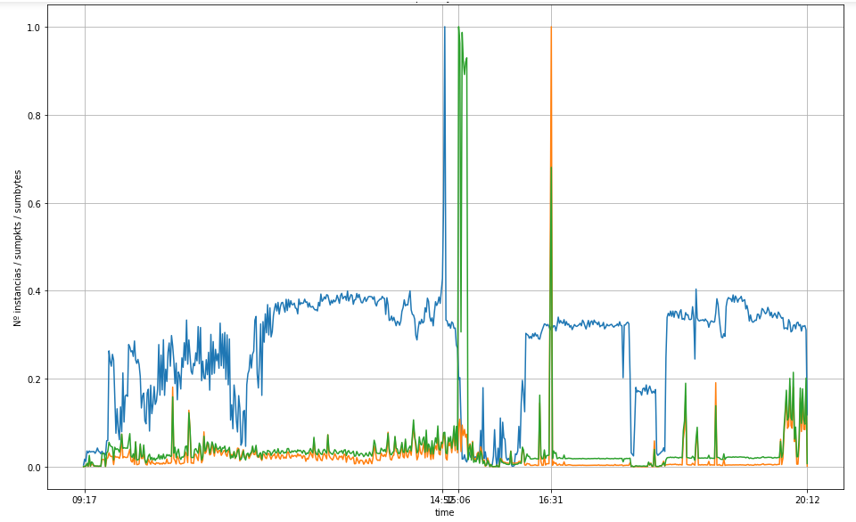
Vemos cómo a las 14:52 se produce el primer pico de número de instancias por minuto, más tarde a las 15:06 el de sum_pkts y a las 16:31 el de sum_bytes junto a otro pico de sum_pkts. Pero, ¿cuál de los tres picos se considera como ataque?, ¿los 3?. Hemos visto que el correspondiente a sum_bytes no puede ser porque estos van dirigidos a otro puerto. Pero, para el caso de sum_pkts, hemos visto que si podría tratarse de ataque al DNS y este pico se produce más tarde que el de la variable número de instancias por minuto. Tenemos que seguir profundizando para aclarar esto. Ya que el enfoque hasta ahora ha sido ver el volumen de tráfico en la red (1), ahora se pasará a ver por quienes están realizados dicho volumen de tráfico (2) y sus características (3). Por tanto la siguiente estrategia será cardinalizar las variables lan_ip y wan_ip. Es decir, mirar el número de ip distintas que hay en cada minuto. Se empieza primero con las variables de destino wan_ip_distintas, wan_l4_port_distintas y la variable wan_l4_port53 que mostrará las cantidad de instancias por minuto que van dirigidas al puerto 53.
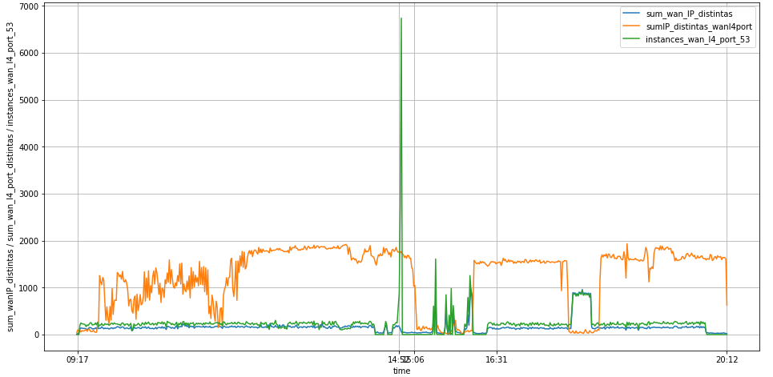
Aquí vemos de nuevo lo que estábamos buscando. La variable wan_l4_port53 muestra el pico a las 14:52 lo que indica definitivamente que el ataque se produce a esa hora. Además coincide con el pico que tenía la variable número de instancias por minuto. En la gráfica se aprecia además cómo el número de puertos distintos en wan_l4 después del ataque disminuye drásticamente, que podría ser debido a la ‘resaca’ que deja el ataque. Además en dicho periodo la cantidad de wan_ip distintas aumenta. Se hace la misma operación para las variables de origen lan_ip, lan_l4_port y lan_l4_port53 para ver de nuevo el comportamiento.
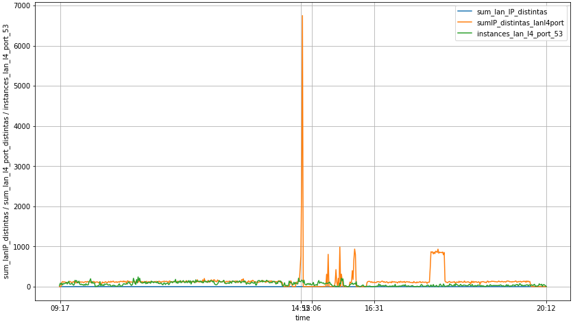
Ahora vemos cómo el pico se produce en la variable sumIP_distintas_lanl4port ya que en ese momento existe un gran número de puertos distintos haciendo peticiones al wanl4port53. Es decir, ahora estamos viéndolo desde el punto de visto del origen y antes desde el destino. Por eso cuando se producen peticiones masivas al servidor DNS, desde el punto de vista del origen, se ve un pico de distintos puertos que hacen las peticiones. Y desde el punto de vista del destino aparece un pico de flows con puerto 53 que vienen desde los puertos lan de origen. De nuevo, el pico se ve a las 14:52 confirmando de nuevo el momento del ataque DDoS. Ahora se va a crear otro dataset con el resto de variables que quedan por transformar como serie temporal para añadir más información a los 3 datasets que hemos creado. Estas variables que quedan por transformar son: tcp_flags, wan_ip_country_code, direction y l4_proto. Pero con direction y l4_proto se hará como en el caso de wan_l4_port = 53, viendo la serie temporal de los distintos valores de direction y l4_proto que son 4 en total, 2 valores distintos cada uno. Es decir, upstream y downstream para direction y 6 (UDP) y 17 (TCP) para l4_proto.
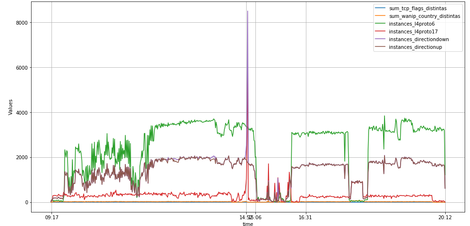
Aquí se ve perfectamente cómo las series temporales de las variables l4proto17(TCP), directiondown muestran el pico en el momento del ataque (14:52) dando a entender que son características típicas de un ataque DNS. Por el contrario, tanto para l4proto como para direction, los valores 6(UDP) y upstream bajan hasta sus mínimos en el momento del ataque. Estos son tendencias que ayudan a identificar el ataque pero a posteriori. Una vez transformadas todas las variables interesantes para el estudio y creado otras nuevas, se ha obtenido un nuevo set de datos con naturaleza de serie temporal. Vemos la gráfica con todas las variables.
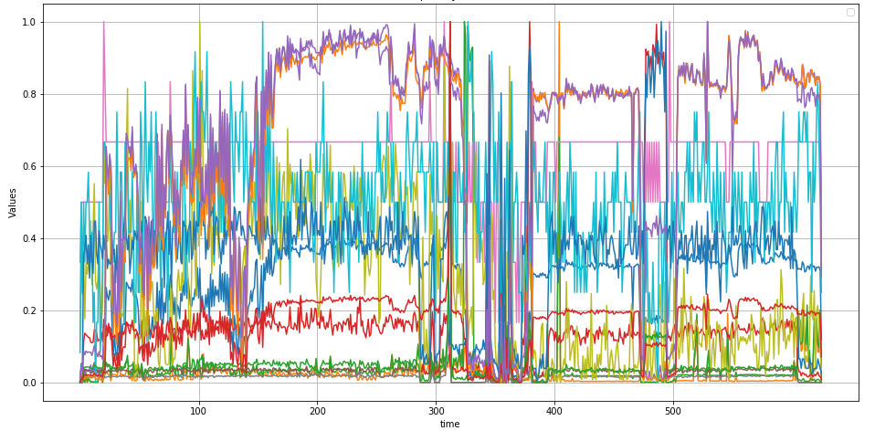
La idea inicial es poder identificar el ataque DNS de forma aislada usando todo el dataset transformado. El único hiper-parámetro del algortimo kmeans que variaremos será n_clusters para poder usar una configuración que detecte al ataque de forma aislada. Otra cosa que se tendrá en cuenta será hacer una clusterización con los datos escalados para comprobar si hay o no diferencia con los resultados de los datos sin escalar. Ya que el algoritmo calcula distancias entre puntos, a priori tiene sentido y deberá dar resultados distintos. Se empiezo primero con datos sin escalar.
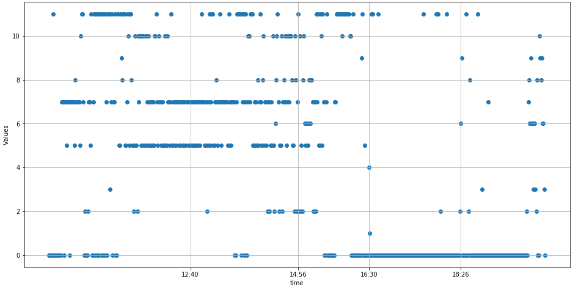
Con los datos sin escalar, se aplican modelos de kmeans desde 2 clusters hasta 12, sin conseguir que ninguno de ellos aisle el ataque en uno de los clusters. Se pasa a aplicarse modelos kmeans sobre el set de datos escalado.
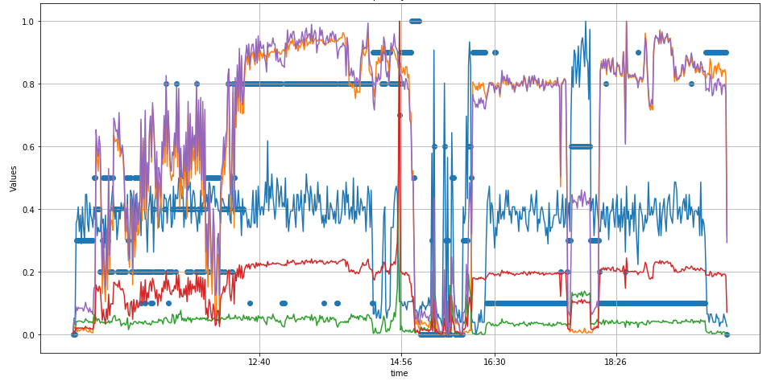
Con los datos escalados vemos que el algortimo logra aislar el ataque en uno de los clusters, usando 11 clusters. Se prueba ahora con un set de datos mas reducido de cara a simplificar el problema y la complejidad del algoritmo. A ver si de este modo el algortimo necesitan menos clusters para aislar el ataque.
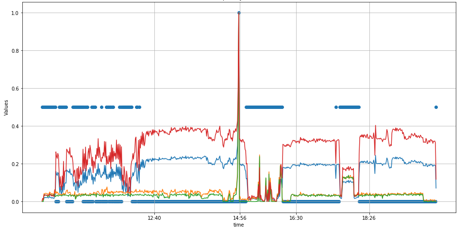
Se ve que con un set de datos escalado y mas reducido se consigue aislar el ataque con 3 cliusters.
La siguiente acción que se hará es probar el modelo ARIMA en una de las 5 series temporales que están contenidas en el conjunto de datos transformado, que muestran el pico del ataque, para ver si la predicción se aleja del pico del ataque, de forma que se catalogue como anómalo ese trozo de la serie. Para ello, el modelo solo tendrá acceso a los datos hasta el momento justo antes del ataque, es decir hasta la fila 310 (14:51), un minuto antes del ataque. Parece que se trata de series temporales con algo de estacionalidad, por lo que nos interesa definir los valores (p, d, q) y (P,D,Q)s para definir el algoritmo ARIMA. En primer lugar, se va a usar la funcion seasonal_decompose sobre las series de tiempo Nflows_scaled para ver de forma gráfica si existe o no estacionalidad. Se establece la frecuencia igual a 60 ya que los datos estan recogidos en una ventana de tiempo de 11 horas (60 minutos cada una). Por tanto, tenemos 11 ciclos.
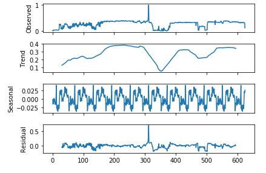
Para Nflows_scaled se ve que la gráfica seasonal muestra estacionalidad. Al igual que la gráfica residual nos muestra cómo la serie se puede predecir sin mucho error hasta el momento del ataque, donde ocurre un fenomeno espontáneo, no estacional. Vemos cómo en la gráfica seasonal aparecen los 11 ciclos, correspondientes a las 11 horas en las que se recogen los datos.
Se lleva a cabo una iteración de los valores pdq donde se obtiene que el mejor modelo es el ARIMA(1, 1, 0)x(0, 0, 0, 60)60 - AIC:-1074.0103166525787. Por tanto, usamos éste para la predección de ataque DDoS. Calculamos ahora las predicciones que nos da el modelo de los datos con los que lo hemos montado. Para ello se usa el método get_prediction, en el que se usará el hiper-parámetro dynamic en modo False para que use siempre todo el histórico de datos que haya hasta justo antes del punto que se quiere predecir. Más tarde se tratará de predecir puntos que el modelo nunca 'ha visto'.
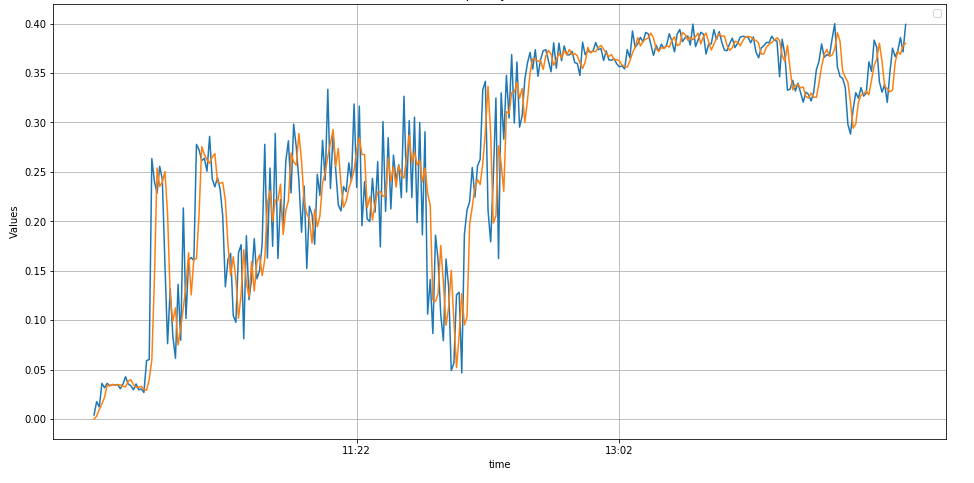
Se ve que la predicción de datos que han sido proporcionados al modelo son fácilmente reproducibles por el mismo. Ahora vamos a hacer una predicción pero de valores que el modelo no ha visto nunca, a ver qué tal lo hace. Se prueba a predecir las 120 siguientes para comparar más adelante con los resultados con el algoritmo ARIMA. Para ello se monta otro modelo SARIMAX, pero ahora se le alimenta con datos hasta la fila 300, para igualar las condiciones usada más adelante con ARIMA. Los resultados obtenidos son:
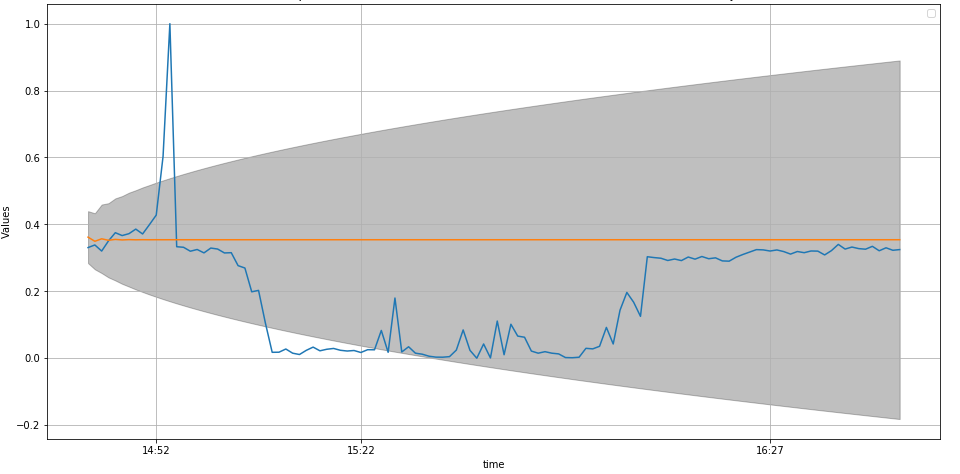
Cuando se iteró para calcular los mejores valores de los parámetros pdq, tanto estacionarios como no estacionarios, se vió que los modelos que arrojaban indices AIC más bajos eran las combinaciones cuyos parámetros estacionarios (P,D,Q)s eran 0. Por tanto, se probará a calcular un modelo con solo parámetros estacionarios. El mejor modelo obtenido es el ARIMA(2, 1, 1) - AIC:-1080.6289758337762. Con el método plot_predict obtenemos la predicción de las 120 siguientes instancias (de la 300 a 420)
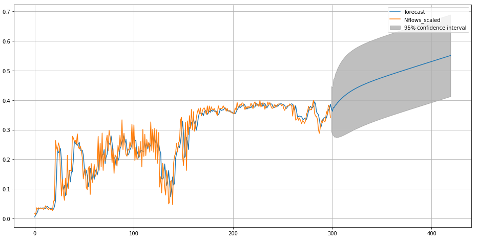
Como era de esperar el modelo ARIMA no llega a predecir el pico por lo que de nuevo confirma que ese pico se trata de un caso anómalo. Aún así, esta vez parece haberse tenido un resultado cuya tendecia es mejor que en el caso anterior con el algortimo SARIMAX. Se va a proceder como última aproximación a calcular otro modelo ARIMA, ampliando el rango de los valores que puede tomar los parámetros p,d,q de 0 a 6. Tras realizar el mismo bucle anteriormente usado, tenemos que el mejor modelo es el ARIMA(0, 1, 5) - AIC:-1097.437831271786.
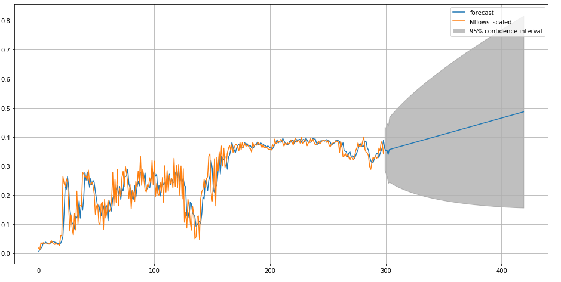
Se ve que los resultados no mejoran los arrojados por el modelo ARIMA anterior construido con un rango menor de valores p,d y q. Tras este cálculo, damos por finalizado el estudio del set de datos proporcionado por la empresa GLEAM AI el cual incluía un ataque DDoS a un servidor DNS.
En cuanto a la naturaleza del problema, y dados los datos que tenemos disponibles para abordar esta tipologia de problemas, se hace de vital importancia el cálculo de algunas variables nuevas a partir de las ya existentes para poder tener una visión más 'real' de la red. Estas variables son las del número de flows en la red por minutos, que mostrarán picos donde haya situaciones críticas como el ataque DDoS. Así mismo, es importante cardinalizar las IP, es decir la cantidad de IP distintas que hay en la red en cada minuto, ya que, de nuevo, en momentos de ataques DDoS este valor se dispara. También es de vital importancia la variable que muestra la cantidad de instancias que van dirigidas al puerto 53, que mostrarán el ataque DNS. Otras también importantes, aunque a priori no lo parecían, son las relacionadas con las variables direction-downstream y las del protocolo TCP de transporte, ya que en el momento de ataque DDoS estas también muestran el pico. Ya que las peticiones al servidor DNS requiere de una descarga de datos que es superior a la soportada por el protocolo UDP.
Tras el uso del modelo kmeans de clusterización se observa que cuanto más complejo sea el problema (más variables a clusterizar) más clusters necesitará el modelo para poder identificar el ataque DDoS en uno de los clusters de forma aislada. Por tanto, de cara a la simplificación y eficiencia a la hora de conseguir dicho objetivo, es interesante usar solo variables que muestren el pico del ataque al servidor DNS. Ya que, en este caso, se reduce el número de clusters necesarios para identificarlo de 11 a 3. Otras de las cosas que se han sacado claras tras este breve estudio con modelos de clusterizacion es la importancia de escalar lo datos, ya que estos modelos usan algoritmos que incluyen cálculos de distancias de los centroides a las distintas instancias que forman los datos, para decidir si pertence a un cluster u otro. Por tanto, estas variables tienen que estar en el mismo rango de valores si queremos identificar patrones. Ya que en estos casos los valores en sí pierden relevancia.
Como se ha visto, no es trivial predecir un ataque DDoS ya que dada su naturaleza no hay indicios antes de producirse. Los modelos ARIMA probados arrojan resultados que dan una ligera idea de que la serie puede crecer algo antes de producirse el ataque pero está muy lejos de poder predecirlo. Esto corrobora que dicho pico es una situación anómala, pudiendo ser usado esta tecncia para confirmar que se trata de un ataque DDoS pero a posteriori. Tras usar varios modelos, se ha visto que, aun tratandose apriori de una serie con estacionalidad, el mejor modelo ha sido el ARIMA (2, 1, 1). Usando como criterio para tal afirmación la gráficas que muestran, en el caso de dicho modelo, la tendencia de la serie en la zona en cuestión. Los demás modelos no mostraban una tendencia tan pronunciada. El método llevado a cabo confirma que, al fin y al cabo, la mejor determinación de la naturaleza de la serie temporal es el uso del modelo ARIMA, al menos en este caso, resultando finalmente un modelo no estacionario el mejor para ajustarse a la serie.